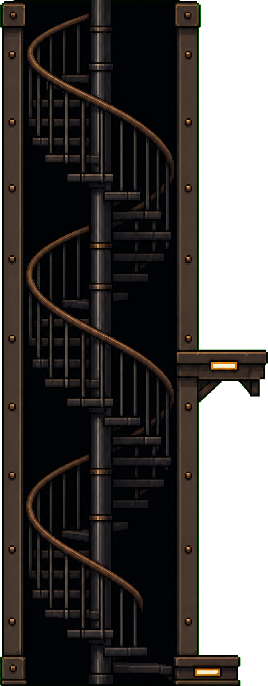
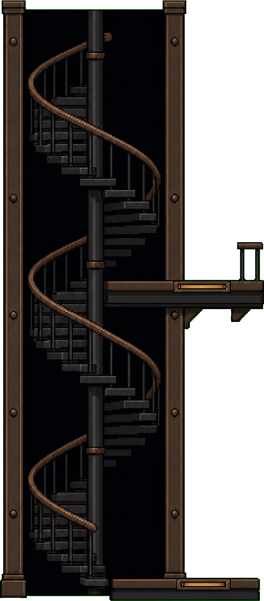
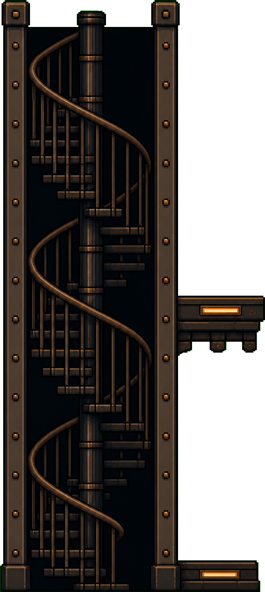

r23 SM — open spiral, two platforms, no doors. Dashed line = the upper story's floor.

A — baseline
ar 0.391 · deck at 51.0% · 15px low

B — railed deck
ar 0.440 · deck at 46.6% · 51px high

C — heavy platforms
ar 0.449 · deck at 49.9% · LAW PASS (−1px)